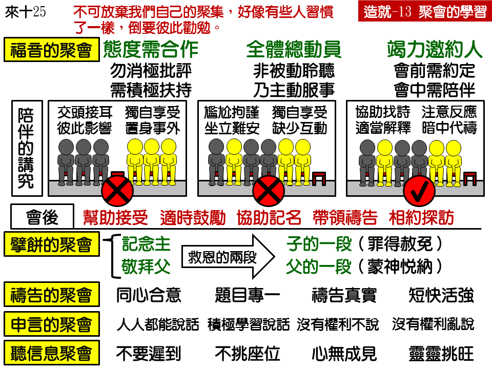

诗歌：628 首、563 首
重要经文：
使徒行传二章四十至四十二节：彼得还用许多别的话郑重的作见证，劝勉他们说，你们要得救，脱离这弯曲的世代。于是领受他话的人，就受了浸，那一天约添了三千人。他们都坚定持续在使徒的教训和交通里，持续擘饼和祷告。
马太福音十八章十九节：我又实在告诉你们，你们中间若有两个人在地上，在他们所求的任何事上和谐一致，他们无论求什么，都必从我在诸天之上的父，得着成全。
哥林多前书十四章二十九节：至于申言者，可以两个人或三个人说话，其余的就当明辨。
纲目要点：
壹 福音的聚会——徒二40～41：
一 态度应该要合作。
二 所有圣徒全出席。
三 每逢福音带人去。
四 在聚会中照顾人：
1 会中坐他旁边，帮他找诗歌、经节，注意反应，替他祷告。
2 会后帮助接受，记名，带他祷告，带人回访。
贰 擘饼的聚会——林前十一24，十17。
叁 祷告的聚会：
一 要同心合意——太十八 19。
二 要专一——徒十二5。
三 要真实——路十一5~10。
四 要简短——徒四24~30，弗一 17~23。
五 不要过于私人的祷告。
肆 申言的聚会－学习得造就。
伍 信息的聚会－心开灵也开。
信息选读：
聚会的实行
按着我们所看见的，圣经里大概有五种不同的聚会：传福音的聚会、擘饼的聚会、祷告的聚会、运用恩赐的聚会、讲道（或听道）的聚会。我们从圣经的榜样里，能知道在当初使徒时代，大概有这五种不同的聚会。今天召会要刚强，也要有这五种不同的聚会。并且每一种的聚会，我们都要学习怎样聚，怎样聚得好，才能使我们得益处。
传福音的聚会
召会在地上不只是为着建立自己，也是为着叫人认识基督。所以，从召会对内的造就来说，好像传福音的恩赐可以排在末后；但是，当召会向外发展的时候，传福音的恩赐是第一个被使用的恩赐。在行传八章，腓利到撒玛利亚去，就是一个凭据。神是第一差派传福音的出外去，运用他们的恩赐来得着人归主。所以，我们必须把这一种老是听道的习惯改过来，看重传福音的聚会。
这一种传福音的聚会，乃是全召会工作的聚会，是每一个弟兄姊妹都有责任的。大家应该豫先多有祷告，由比较长进、比较有恩赐的弟兄们站起来作福音的出口，其他弟兄姊妹们要同心合意的为作出口的弟兄们祷告，让他们能刚强有力的把福音传出去。
召会传福音传得好或传不好，就看全体弟兄姊妹的情形怎样。如果全体弟兄姊妹都参加，全体弟兄姊妹都在那里作工，福音就有路。所以，你必须在那里注意，到底这一个人听了这些话怎么样。这是你所带去的人，他的情形，你相当清楚，你的眼睛要注意他，为他祷告：“主！你打动他的心。主！你叫他能领会。主！你叫他受感动。主！你除去他的骄傲，叫他听得进去。”
擘饼的聚会
每一次的擘饼聚会，最好有两段，因为救恩有两段。救恩的第一段，乃是你看见你自己是一个罪人，你是一个该受审判的人，你是一个该死的人，但是，主怜悯你，来到世上替你死，主救你，流出祂的血来赦免你的罪，你因为接受主耶稣的血，你的罪得着了赦免。这是救恩的第一段。但是，救恩不停在这里。你得救了，你得着主耶稣，你是属乎祂的，主耶稣就把你这一个人带到神面前去，称呼祂的父作你的父，圣灵就在你里面教你称呼神作阿爸父。（罗八 14～16。）这是救恩的第二段。换句话说，第一段是主的一段，第二段是父的一段。
祷告的聚会
弟兄姊妹聚集在一起祷告，有一个基本的要求，就是要同心合意。马太十八章，主对我们说，要同心合意。行传一章的祷告，也是同心合意的。所以，祷告的聚会，第一个条件就是要同心合意。总不能各人有不同的心意来聚祷告的聚会。我们要聚祷告的聚会，我们就得同心合意的来求。
祷告要怎样才能和谐呢？在祷告的聚会中，恐怕最大的难处就是题目太多。一个祷告聚会题目一多，就不能和谐。我们在圣经里所看见的，乃是为着专一的事而祷告；彼得被囚在监狱里，召会就为他切切的祷告。（徒十二 5。）他们不是祷告许多事，只是为着一件事祷告。题目一单纯，祷告就容易和谐。
真的祷告，乃是从心里出来的羡慕，乃是我们从全人的深处所流出来的东西。只有从心的深处流出来的真实的话，才是真的祷告。我们的祷告，该注重神听不听，不该注重在弟兄姊妹面前好听不好听。在祷告的聚会中，不需要我们在神面前说一大套的话，好像神不知道，要我们在那里仔细的通知祂，给祂作报告，给祂讲道理似的。祷告乃是因为我们自己有需要，我们自己有软弱，我们要借着祷告去得着属灵的供应，得着属灵的能力。所以，必须你里面感觉需要有多少，才能使你真实的祷告有多少。你如果不觉得有需要，那你的祷告就成了虚假的祷告。
在祷告的聚会中，有许多祷告所以会变作虚空、虚假，就是因为太长。也许有两三句是真的话，其余都是多添上去的；有两三句是给神听的，其余都是给弟兄姊妹听的，话拖长了。初信的弟兄姊妹要看见，如果信主多年的弟兄姊妹们祷告长，让他们去长，但是你要祷告得短。不是所有的弟兄姊妹能祷告得长。老是祷告得长，会使召会受到很大的亏损。
运用恩赐的聚会
初信的弟兄来到这一个聚会里，的确有相当困难，因为他们不知道自己有没有恩赐。说到话语的职事，他们又根本谈不到。刚刚信主，好像什么都谈不到。这样，他们有什么方法接上去呢？盼望比较年长的弟兄带领年轻的弟兄的时候，不要禁闭他们的口，要给他们有机会说话，要对他们说，“我们不知道你有没有恩赐，我们不知道神有没有给你话语的职事，所以请你在起头学说话的时候，简单一点的说。”有恩赐的要鼓励他往前进；少恩赐的，要稍微给他一点限制。这样能够叫聚会有力量，也不封闭弟兄的口。初信的弟兄要学习谦卑，受鼓励开口的时候就开口，受题醒少开口的时候就少开口，要听从年长弟兄的带领。
听道的聚会
在许多种的聚会中，听道的聚会是最简单的聚会。但是也像别的聚会一样，许多地方要学。你去聚会的时候，不要去得太迟，叫别人老等你。要顺服招待的人，安排你坐在哪里就坐在哪里，不要一直挑选座位。或者你有生理上的原因，耳朵不好，眼睛不好，你可以先对招待的人说明，让他给你拣一个座位。圣经要带去，诗歌也要带去。
在属灵方面：参加这一个聚会，第一，心必须打开。如果心是关闭的，在神面前就不能蒙恩典。不只心应当开起来，灵也应当开起来。在这一个聚会中，灵开起来是十分紧要的。真的话语的执事讲道的时候，灵是开起来的。他如果摸着聚会里面也有开起来的灵，他的灵出来就更有力量。 （摘自初信造就第十三篇）
课程复习：
一 圣经给我们看见哪五种聚会？
二 谁应该参加福音聚会？
三 擘饼聚会有哪两段？
四 我们在祷告聚会中该有什么学习？
五 我们在听信息时该有什么操练？
辅助图表：
